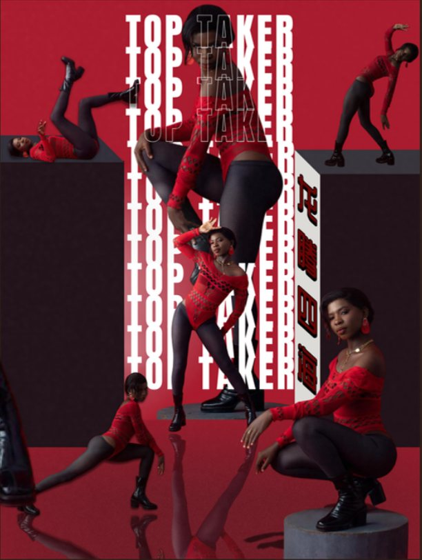
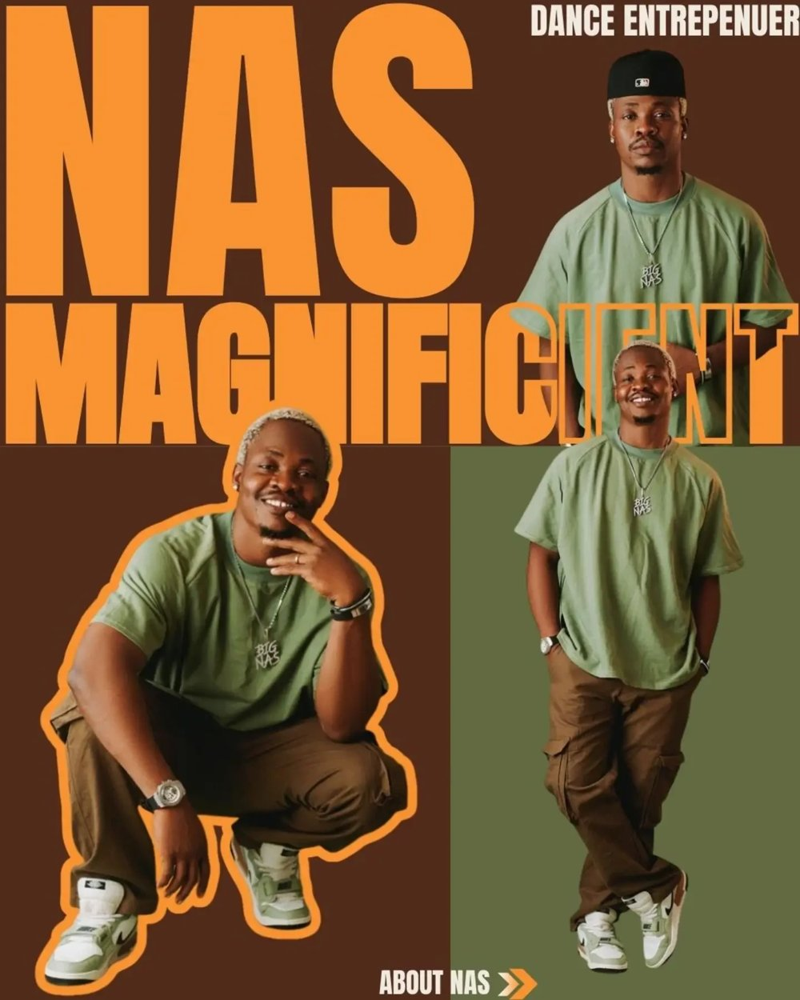
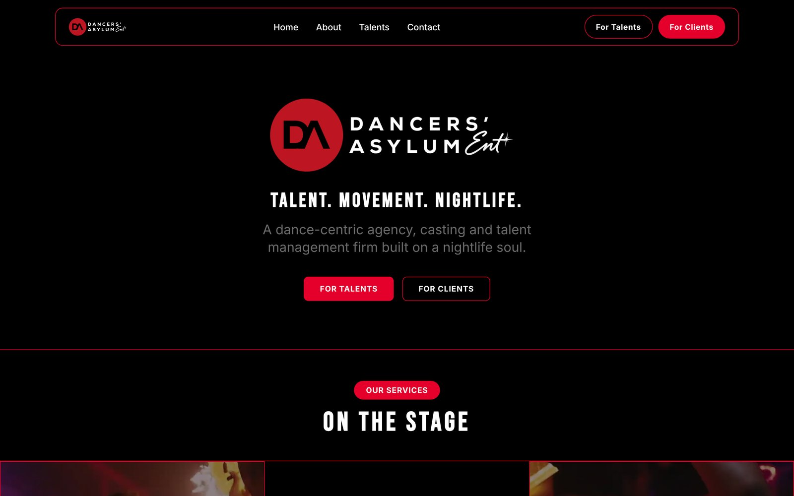
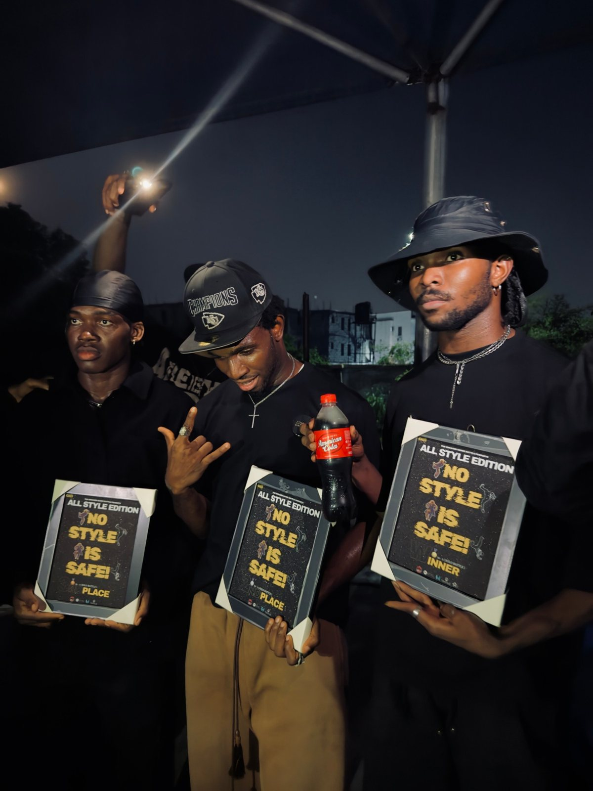

01
Photo Designing
Your photos are your first handshake.
A raw photo shows what you look like. A designed photo shows who you are. Good photo design turns ordinary pictures into visuals with mood, story and impact, the kind that stop people scrolling.
- Makes your content stand out in a crowded feed
- Gives your brand a recognizable visual style
- Makes promotions, announcements and releases feel like events

See: Photo Designing02
Logos & Flyers
Your logo is your signature. Your flyer is your invitation.
A logo is often the first thing people see and the last thing they remember. A clear, well-made logo makes a business look established from day one. A strong flyer decides whether people show up to your event or scroll past it.
- A professional logo builds instant credibility
- Flyers with clear dates, venues and details bring real attendance
- Matching designs across events build a brand people recognize
 See: Logos & Flyers
See: Logos & Flyers
03
Portfolio Designing
Your portfolio speaks for you when you're not in the room.
Models, dancers and creatives are hired on what they show. Agencies and brands see hundreds of profiles. A professional portfolio puts your best work first, tells your story clearly, and makes it easy for them to say yes.
- Presents your experience, achievements and best images in one place
- Makes you look ready for bigger opportunities
- Gives agencies and clients a reason to remember your name
 See: Portfolio Designing
See: Portfolio Designing
04
Instagram Format
Instagram is where people check you out first.
Before anyone books you, they look at your page. An Instagram-format portfolio turns your feed into a story: who you are, what you've achieved and how to reach you, told one post at a time, in the place your audience already spends their time.
- Your profile works as a portfolio people can browse in seconds
- Every post looks consistent and intentional
- Easy to share with brands, agencies and event organizers

See: Instagram Format05
Web Designing
A website is your office that never closes.
Social media can change its rules overnight. Your website belongs to you. A good one shows your work, answers questions and brings in enquiries at any hour, without a single phone call. For Dancers Asylum, I built a site where talent can learn how to join and clients can learn how to book.
- Makes you look established and trustworthy
- Gives clients everything they need in one place
- Works for you 24/7, even while you sleep

See: Web Designing06
Awards & Plaque Designs
Recognition should feel worth earning.
When you honor people, the design of that honor matters. A well-made plaque tells winners their effort counted, makes your event look world-class, and makes everyone watching want to earn one too.
- Gives winners something they're proud to keep and share
- Lifts your event's reputation
- Completes your event identity, from first flyer to final prize

See: Awards & Plaque Designs07
Brand Rebranding
Growing brands outgrow their old look.
The logo you made when you started may not fit who you are today. Rebranding keeps your identity in step with your growth: sharper visuals, a clearer message and one consistent look everywhere people find you. Done right, it tells your audience you've leveled up without losing what they loved about you.
- Refreshes an outdated look so you compete with bigger names
- Brings your logo, colors, flyers and socials into one consistent identity
- Signals growth to clients, partners and fans
08
Social Media & AI Automation
Work smarter, not harder.
Posting, replying, following up and tracking results take hours every week. A data-driven social strategy shows you what's working, and automation handles the repetitive tasks, so you can spend your time on the work only you can do.
- Grows your audience with a plan based on real results, not guesswork
- Saves hours every week on repetitive tasks
- Helps you reply to enquiries faster, so you don't lose clients to slow responses
Professional doesn't mean expensive. It means intentional.
Every choice, from colors and fonts to layout and photos, should work toward one goal: making people trust you and want to work with you. That's what I help brands, founders and creatives do.
Ready to look professional? Let's talk →